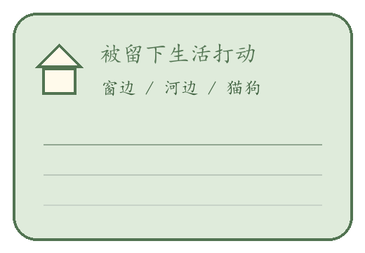
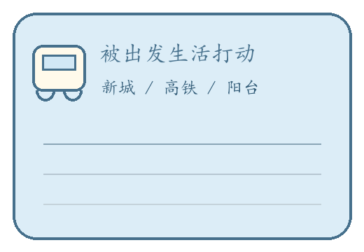
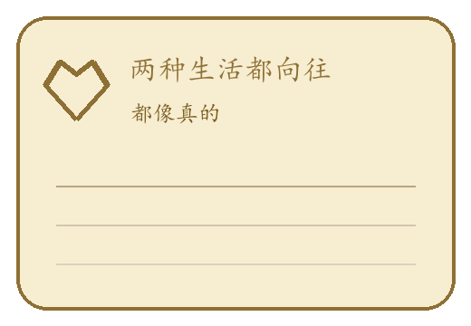
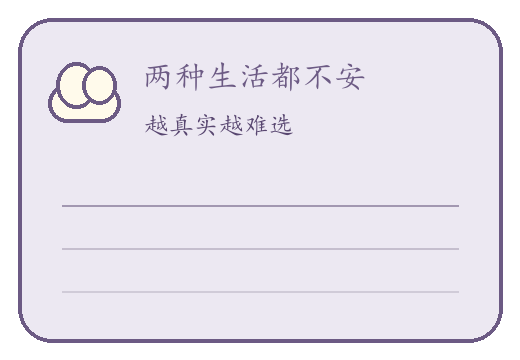

菜单
手机
证据
日志
设置
第三章：两个故事的起点
日历冲突复查
404
分析

喜欢留下的生活

期待出发的生活

我都向往

我都不安
叙述
▼
第二次判断已归档。
点击对白继续。
证据
时间对照
关闭
记录
第三次判断
尚未获得第三章记录。
城市选择开始分开
关系起点开始分开
有人篡改记忆
两个故事都不完整
日志
交互记录
关闭
已发生剧情
0 条
还没有新的交互记录。
获得证物
证物已贴进记录
新的证物已经加入证据页。
贴进记录
‹
手机
•••
第三章
时间对照板入口
回看两段生活起点。
打开时间对照板